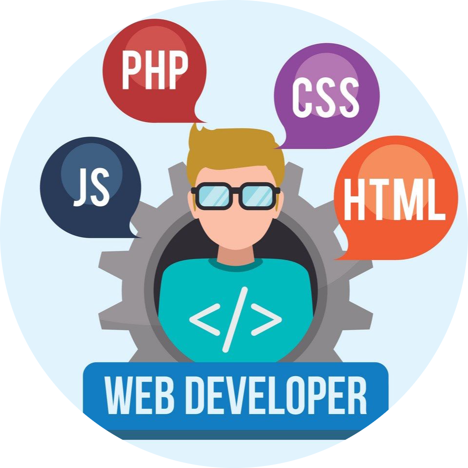

Hi, I'm Sean!
intend to be a Software programmer.

I am self-taught Web Development and intend to enter IT industry.
I love programming and coding my own website. 😍
Currently, I am learning to create laravel project.
I have experience in designing user-interface websites with a strong grasp of HTML5 and CSS. Additionally, I am proficient in using Front-end toolkit and css framework such as CSS Tailwind, Bootstrap and etc.

My expertise of Back-end skill lies in PHP Laravel. I've honed my skills in creating robust and efficient back-end systems that power dynamic web applications. My passion for back-end development extends to optimizing database performance, and ensuring seamless server-side functionality.

I always keep myself learning up-to-date skill through Udemy, Youtube, etc. My best skill is keep motivated myself for learning and develop myself.
Let me be your power! I can do something AWESOME!